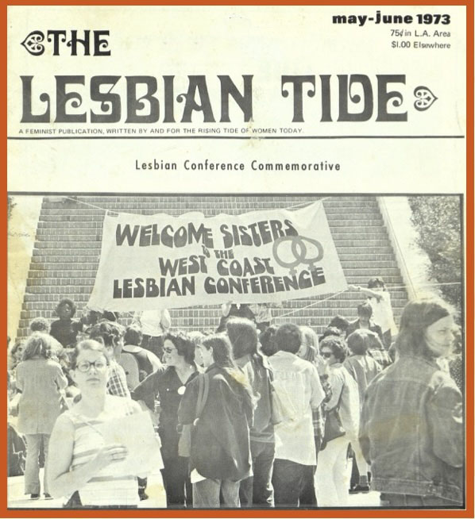

LESBIAN HISTORY PROJECT (THE) A Lesbian History Research Site
Send information and inquiries to yretter@chicano.ucla.edu
Server space provided by USC.
[URL: http://www-lib.usc.edu/~retter/main.html]

"Between the time of Sappho and the birth of Natalie Clifford Barney lies a 'lesbian silence'
of twenty-four centuries" (Bertha Harris)
In Memoriam (LGBT Activists) Link
LESBIANS AND GAYS WHO DIED ON SEPTEMBER 11, 2001. Link
Objectives of the Lesbian History Project Link
Notable Lesbians of all colors (list) Link
Lesbians of Color Site Link
Southern California Lesbian History Link
Articles, Interviews, Documents, History, etc. Link
Archives, Collections and History Projects Link
Dissertations and Theses on Lesbian History Link
Journals (current and archival) Link
Bibliographies/Citations/Syllabi Link
Photographs and photographers Link
Lesbian Log - World Wide News from the Internet (1996-2000) Link
Lesbian History in Other Countries Link
Links to sites related to lesbian history Link
The Quotable Lesbian Link
We welcome additions and corrections to the site and suggestions for links. WARNING: This is a visually plain and simple research site. It lacks a surfeit of graphics, bells, and whistles. We delete inactive links as time permits. Site created and maintained by Yolanda Retter. © 1996, 2005 Yolanda Retter. Many thanks to John Waiblinger for technical assistance.
Other sites by Y. Retter:
Women of Color Link
You are visitor number  since March 28, 2005
since March 28, 2005